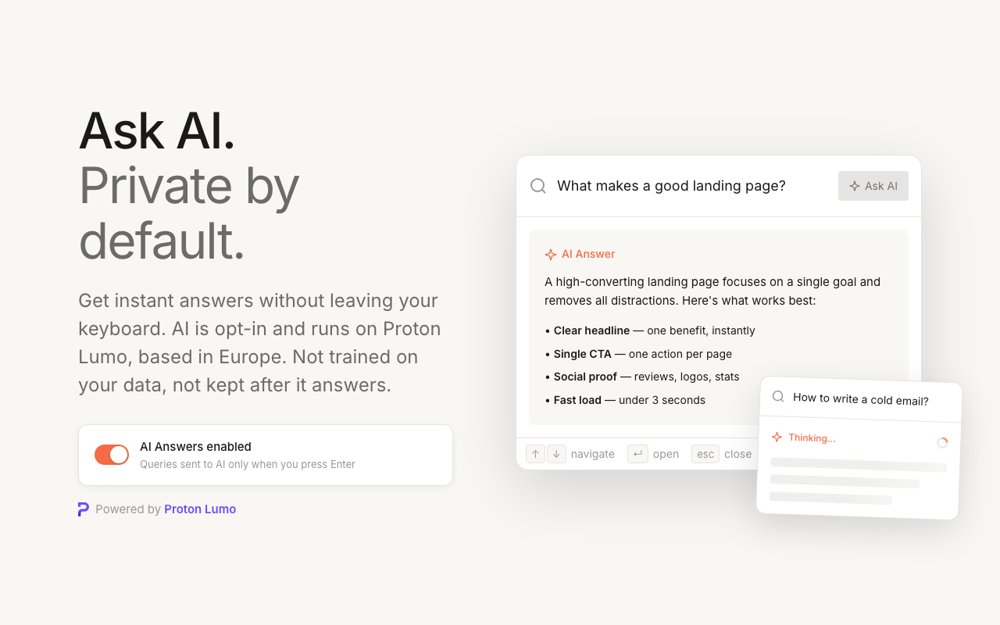

Privacy
Daysift's AI now runs on Proton Lumo
Ask AI and page summaries now run on Proton Lumo, private AI built in Europe that isn't trained on or kept. Here's exactly what changes, and what it doesn't.
September 30, 2026